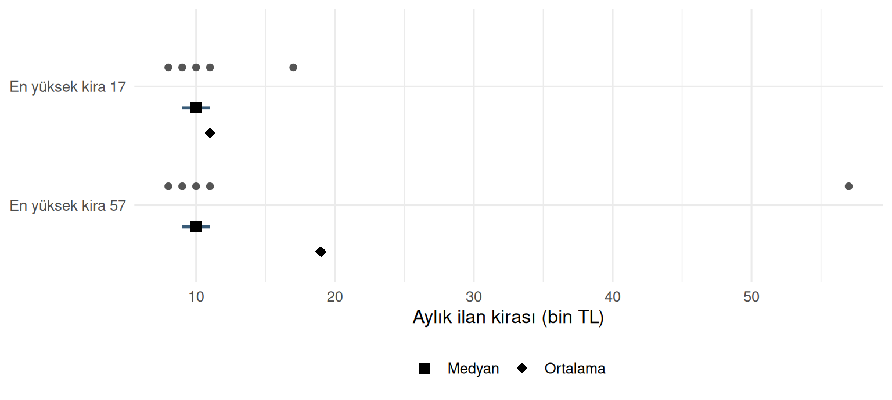
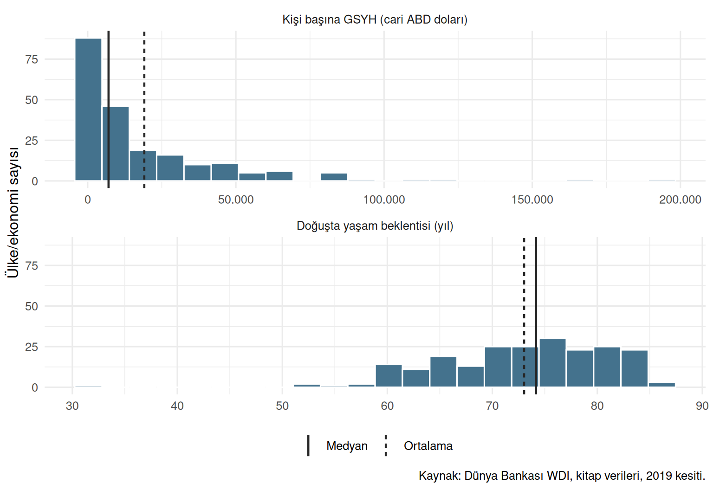

Bir belediye, yeni kiralık konut ilanlarını izliyor. Meclise sunulacak raporda her ilanın kirasını tek tek göstermek mümkün. Ancak bir kiracının karşılaşabileceği fiyat düzeyini anlamak için önce daha dar bir soru sormak gerekir. İlanların yarısı hangi fiyatın altında kalıyor? İki semtte ortalama aynıysa fiyat seçenekleri de benzer mi? Birkaç çok pahalı ilan, bir semtin bütünü hakkında nasıl bir izlenim yaratıyor?
Betimsel istatistik, bu tür sorulara yanıt vermek için birçok gözlemi okunabilir bir özete dönüştürür. Örneğin gözlem sayısıyla birlikte verilen ortalama, değerlerin toplamını yeniden elde etmemizi sağlar. Tek tek değerleri, sıralarını veya uçlarda kaç gözlem bulunduğunu geri getiremez. Şekil 21.1 üzerinde aynı ortalamanın farklı yayılımlarla bir arada bulunabildiğini gördük. Bu bölümde, o örüntünün neden mümkün olduğunu ölçülerin matematiksel özellikleriyle açıklayacağız. Grafik ve sayısal özet birlikte okunduğunda, her biri diğerinin gizlediği ayrıntıları görünür kılar (Tukey 1977; Wilke 2019).
Bölüm 29 bölümündeki gibi önce birimi ve kapsamı belirleyeceğiz. Kira örneğinde birim bir ilan, ölçüm ilanda istenen aylık kiradır. İlanlar gerçekleşmiş kira sözleşmelerini temsil etmez. Bölüm sonunda merkez ve yayılımı birlikte yorumlayabilecek, ağırlıkları hedef niceliğe göre seçebilecek ve aynı örnekte farklı kantil hesaplarının neden ayrıştığını açıklayabileceksiniz. Uygulamada temel vektör işlemleri, Bölüm 11 bölümündeki özetleme ve Bölüm 23 bölümündeki grafik okuma bilgisi yeterlidir.
30.2 Merkezi eğilim ölçüleri
Bir semtte gözlenen beş ilanın aylık kiraları 8, 9, 10, 11 ve 17 bin TL olsun. Bu beş ilanın toplam aylık kira tutarı 55 bin TL’dir. Tutar beş ilana eşit paylaştırılsaydı her birine 11 bin TL düşerdi. Aritmetik ortalama bu eşit payı verir. Her ilanın tutarı aynı ağırlıkla hesaba katılır. Toplam maliyet sorusunda bu özellik işe yarar. Örneğin aynı beş konut birlikte kiralansaydı ortalamayı beşle çarparak toplam aylık ilan bedelini bulabilirdik.
Gözlem sayısı \(n\), \(i\). ilanın kirası \(x_i\) ve \(i\) değeri 1’den \(n\)’ye kadar giden gözlem numarası olsun. \(\sum\) bu gözlemlerin toplamını alır. Ortalamayı \(\bar{x}\) ile gösteririz:
\[
\bar{x}=\frac{1}{n}\sum_{i=1}^{n}x_i.
\]
Kiralara bütçe açısından bakıldığında başka bir soru öne çıkar. Sıranın ortasındaki ilan ne kadar? Küçükten büyüğe sıralanan beş fiyatın üçüncüsü 10 bin TL’dir. Medyan bu orta konumu temsil eder. Çift sayıda sayısal gözlem olduğunda yaygın hesap, sıradaki iki orta değerin ortalamasını alır. En pahalı ilan 17 yerine 57 bin TL olsaydı, sıradaki yeri değişmezdi ve medyan 10’da kalırdı. Ortalama ise 8 bin TL artardı. Bunun nedeni artan 40 bin TL’nin beş ilana paylaştırılmasıdır.
Bir belediye aynı ilanları konut tipiyle de özetleyebilir. “2+1” en sık karşılaşılan kategoriyse konut tipinin modu “2+1”dir. Kategorilerin sayısal kodlarına ortalama uygulamak bu soruyu cevaplamaz. En yüksek frekansı birkaç kategori paylaşıyorsa birden çok mod vardır. Sürekli ölçümlerde ise en sık tekrarlanan sayıya dikkat etmek sınırlı bilgi verebilir. Fiyatlar yüz TL’ye yuvarlandığında bazı değerler tekrar eder, aynı fiyatlar tam duyarlılıkla kaydedilse tekrarlar kaybolabilir. Böyle bir durumda dağılımın en çok yoğunlaştığı bölgeyi bir grafikle incelemek daha anlamlı olabilir.
kira <-c(8, 9, 10, 11, 17)konut_tipi <-c("1+1", "2+1", "2+1", "3+1", "2+1")c(toplam =sum(kira), ortalama =mean(kira), medyan =median(kira))
toplam ortalama medyan
55 11 10
frekans <-table(konut_tipi)frekans
konut_tipi
1+1 2+1 3+1
1 3 1
names(frekans)[frekans ==max(frekans)]
[1] "2+1"
11 bin TL’lik ortalama toplamı, 10 bin TL’lik medyan orta ilanı, “2+1” kategorisi ise en sık gözlenen konut tipini açıklıyor. Her ölçü farklı bir soruya karşılık geliyor.
30.3 Ortalamanın matematiksel özellikleri
Bir sayı doğrusu üzerinde her kirayı aynı ağırlıkta birer nokta olarak düşünün. 11’in solundaki 8, 9 ve 10 değerleri sırasıyla 3, 2 ve 1 birim uzaktadır. Sağdaki 17 değeri 6 birim uzaktadır. Sol ve sağ uzaklıkların toplamı eşitlendiği için 11, dağılımın denge noktasıdır. Genel olarak ortalamadan işaretli sapmaların toplamı sıfırdır:
Ortalamayı seçmek, başka bir anlamda da bu noktayı özel kılar. Beş ilanın kirasını tek bir \(a\) değeriyle temsil ettiğimizi düşünelim. Her ilan için temsil hatası \(x_i-a\) olsun. Hataların karesini topladığımızda büyük hatalar daha ağır sayılır. Bu toplamı en küçük yapan \(a\), ortalamadır:
Burada \(a\) seçebileceğimiz herhangi bir gerçek sayı, \(\arg\min\) ise toplamın en küçük olduğu \(a\) değeridir. Nedenini görmek için \(x_i-a\) farkını, \(x_i-\bar{x}\) ve \(\bar{x}-a\) parçalarına ayıralım. Karesini açıp bütün ilanlar için toplarsak ortak çarpım terimi ortadan kalkar, çünkü \(\sum_{i=1}^{n}(x_i-\bar{x})=0\). Geriye şu kalır:
İlk toplam veriye bağlıdır. İkinci terim ancak \(a=\bar{x}\) olduğunda sıfırlanır. Başka bir temsil değeri seçildiğinde toplam kareli hata artar.
Hatanın karesi yerine mutlak değeri\(\lvert x_i-a\rvert\) alınırsa, her ek uzaklık birimi aynı maliyeti taşır. Sıralanmış değerleri uçlardan eşleyelim. 8 ile 17 arasındaki herhangi bir \(a\), bu iki değere toplam 9 birim uzaktadır. Benzer biçimde 9 ile 11 arasındaki bir \(a\) için bu iç çiftin katkısı sabit 2’dir. Her iki çiftin en düşük katkısını koruyup ortadaki gözleme olan uzaklığı sıfırlayan değer 10’dur. Bu eşleme mantığı genel olarak toplam mutlak sapmayı bir medyanın en aza indirdiğini gösterir. Çift sayıda gözlemde iki orta değer arasındaki bütün noktalar aynı en küçük toplamı verir.
Kareli toplam 11’de 50, mutlak toplam 10’da 11 olur. Büyük hataların özellikle maliyetli olduğu bir karşılaştırmada ortalamanın denge noktası davranışı yararlıdır. Ölçüt dakika veya TL başına sabit kayıp ise medyanın mutlak uzaklık özelliği doğrudan o soruya karşılık gelir.
30.4 Ağırlıklı ve geometrik ortalama
Bir mahallede incelenen 100 hanenin %30’u, başka bir mahalledeki 900 hanenin %50’si bir hizmeti kullanıyor olsun. Mahallelerin yüzdelerine eşit ağırlık verince %40 elde ederiz. Bu, iki mahalle yüzdesinin ortalamasıdır. İncelenen haneleri bir araya getirdiğimizde ise \(30+450=480\) kullanıcı hane vardır ve 1.000 hanenin %48’i hizmeti kullanır. İki cevap farklı birimleri eşit sayar. Bölüm 29 bölümündeki ülke ve birey paydaları ayrımı burada da geçerlidir.
Gözlem veya grup sayısı \(n\), değer \(x_i\), onun ağırlığı \(w_i\) olsun. Bu örnekte ağırlıklar hane sayılarıdır. Ağırlıklar negatif değildir ve toplamları pozitiftir. Ağırlıklı ortalama \(\bar{x}_w\), her değerin ağırlığıyla çarpılıp bu çarpımların toplam ağırlığa bölünmesiyle bulunur:
İki mahallede hizmet tanımı, ölçüm dönemi ve payda uyumluysa bu hesap birleşik hane oranını verir. Her mahallenin aynı söz hakkına sahip olduğu bir karşılaştırma ise eşit ağırlıklı özeti tercih edebilir. Ağırlık niceliğin kapsamını değiştirir. Veri kapsamındaki bir eksikliği kendiliğinden gidermez.
Bazı süreçlerde değerler toplanarak değil, çarpılarak birikir. Bir işletmenin satışları ilk yıl %50 artsın, ikinci yıl %20 azalsın. 100 birimlik başlangıç önce 150’ye, sonra 120’ye gider. Yıllık oranların aritmetik ortalaması %15’tir. Her yıl %15 artış uygulandığında iki yıl sonunda 120 birim elde edilmez. Soruyu “Her yıl aynı oranda değişseydi aynı son değere ulaşmak için bu oran ne olmalıydı?” diye sorarsak geometrik ortalama gerekir.
\(r_i\), \(i\). dönemin ondalık büyüme oranı ve \(g_i=1+r_i\) onun pozitif büyüme çarpanı olsun. \(n\) eşit uzunluktaki dönem için \(\prod\) işareti çarpanların tümünü çarpar. Aynı toplam değişimi üreten sabit çarpan \(G\), toplam çarpımın \(n\). köküdür:
\[
G=\left(\prod_{i=1}^{n}g_i\right)^{1/n}.
\]
\(G\) her dönem uygulandığında \(G^n\) gerçek çarpıma eşit olur. Dönem başına eşdeğer büyüme oranı \(G-1\)’dir. Pozitif çarpanlarla hesap yapmak gerekir. Yüzde oranlarının kendilerini çarpmak, azalışları ve başlangıç değerine göre değişen tabanı yanlış temsil eder.
Birleşik oran %48, eşdeğer büyüme hızı ise yaklaşık %9,54’tür. Birincisi aynı dönemdeki birimleri paydalarıyla toplar. İkincisi farklı dönemlerin birbirine uygulanan etkisini tek hızla özetler.
30.5 Yayılım ölçüleri
Kira medyanı, listenin ortasının nerede olduğunu söyler. Bütçesini belirleyen bir kiracı, o merkez çevresinde ne kadar seçenek olduğunu da bilmek ister. Açıklık, en büyük değerden en küçüğü çıkarır. Kira listesinin açıklığı \(17-8=9\) bin TL’dir. Uçlardaki iki ilan arasındaki mesafeyi verir. Aradaki bütün ilanlar değişse bile iki uç aynı kaldığı sürece açıklık değişmez.
Çeyreklikler, sıralı dağılımda alt ve üst kısımları ayıran konumları gösterir. Birinci çeyreklik \(Q_1\) yüzde 25’e, üçüncü çeyreklik \(Q_3\) yüzde 75’e karşılık gelir. Çeyreklikler arası açıklık\(\mathrm{IQR}=Q_3-Q_1\), dağılımın ortadaki yarısına karşılık gelen değer aralığının genişliğini ölçer. Küçük veya bağlı değerler içeren veri setlerinde bu aralığın içine düşen gözlem sayısı tam yarıya eşit olmak zorunda değildir. Kira listesindeki çeyreklikler, R’nin varsayılan hesabıyla 9 ve 11’dir. IQR 2 bin TL iken açıklık 9 bin TL’dir. Bu fark, uçlar arasındaki mesafenin orta bölgeden çok daha geniş olduğunu gösterir.
Açıklık ve IQR belirli konumlar arasındaki farklardır. Varyans ve standart sapma ise her ilanın ortalamadan ne kadar uzaklaştığını hesaba katar. Bu nedenle aynı uçları ve çeyreklikleri koruyan iki listenin standart sapmaları farklı olabilir (Tukey 1977).
30.6 Varyans ve standart sapma neden böyle tanımlanır?
Kira değerlerinin 11 bin TL’den farkları sırasıyla \(-3,-2,-1,0,6\) bin TL’dir. Toplam sıfırdır. Bu toplamdan gözlemlerin 11’e ne kadar yakın olduğunu anlayamayız. Mutlak değerler alınırsa uzaklıklar birbirini götürmez. Kareler de bu sorunu çözer ve uzak gözlemlere daha büyük katkı verir. Örneğin 6 birimlik sapmanın karesi 36, 3 birimlik sapmanın karesi 9’dur. Uzaklık iki katına çıktığında kareli katkı dört katına çıkar. Ayrıca bir önceki bölümdeki özdeşlik, kareli sapmaların merkez değiştiğinde nasıl değiştiğini açık biçimde ayırır.
30.6.1 Gözlenen değerlerin yayılımı
Hedef anakütlenin tamamında \(N\) değer bulunduğunu varsayalım. \(x_i\), \(i\). değer ve \(\mu\), bu \(N\) değerin ortalamasıdır. Anakütle varyansı \(\sigma^2\), kareli sapmaların aritmetik ortalamasıdır:
Beş ilan hedeflediğimiz listenin tamamıysa kareli sapma toplamı 50, varyans \(50/5=10\) olur. Veri bin TL ile kaydedildiğinden varyansın birimi \((\text{bin TL})^2\)’dir. Standart sapma\(\sigma=\sqrt{\sigma^2}\) olduğunda yeniden bin TL ölçeğine dönülür. Bu liste için yaklaşık 3,16 bin TL, ortalamadan uzaklıkların karesel ortalama köküdür. Standart sapma gözlemler arası bir yayılım ölçüsüdür. Bir sonraki örneklemde ortalamanın ne kadar değişeceği başka bir sorudur.
30.6.2 Örneklem varyansı ve serbestlik derecesi
Bir anakütlenin yayılımını o anakütleden gözlenen \(n>1\) değerle tahmin ettiğimizi düşünelim. Bu kez gerçek merkez \(\mu\) bilinmediğinden örneklem içinden \(\bar{x}\) hesaplanır. Örneklem varyansı \(s^2\) ve onun karekökü \(s\) şöyle tanımlanır:
Örneklem standart sapması \(s=\sqrt{s^2}\) yine gözlemin kendi birimindedir. Aynı beş sayıyı bir örneklem olarak düşünürsek ilk dört sapma \(-3,-2,-1,0\) belirlendiğinde son sapma zorunlu olarak 6’dır. Sapmaların toplamı sıfır koşulu, bir sapmayı diğerlerinden belirlemeye yeter. Bu nedenle merkez veriden tahmin edildikten sonra sapmalar için \(n-1\)serbestlik derecesi kalır. Bu sayım, bir kısıt bulunduğunu gösterir. \(n-1\)’e bölmenin neden doğru bir düzeltme olduğunu değerlendirmek için ayrıca örnekleme modeline bakmak gerekir.
Gözlemler bağımsız ve aynı dağılımdan geliyorsa ve o dağılımın sonlu bir \(\sigma^2\) varyansı varsa, gerçek merkez çevresindeki kareli sapmalar toplamının beklenen değeri \(n\sigma^2\)’dir. Buradaki \(\sigma^2\), aynı gözlem mekanizmasının uzun dönem varyansıdır. Kareli hata özdeşliğinde temsil değeri olarak gerçek merkezi seçince şu ilişki elde edilir:
Son terim, örneklem ortalamasının gerçek merkezden sapması için ayrılmış kareli katkıdır. Bağımsızlık altında ortalamanın varyansı \(\sigma^2/n\)’dir. Çünkü \(n\) bağımsız değerin toplam varyansı \(n\sigma^2\), ortalama alınırken ölçek çarpanı \(1/n\) ve onun karesi \(1/n^2\)’dir. Ortalama, tekrarlar boyunca \(\mu\) çevresinde olduğundan \(n(\bar{x}-\mu)^2\) teriminin beklenen değeri \(\sigma^2\)’dir. Böylece örneklem merkezi çevresindeki kareli toplamın beklenen değeri \(n\sigma^2-\sigma^2=(n-1)\sigma^2\) olur. Bu toplamı \(n-1\)’e bölmek, tekrarlar boyunca beklenen değeri \(\sigma^2\) olan bir tahmin verir. Bu ayarlama Bessel düzeltmesi olarak bilinir.
Bu gerekçe normallik gerektirmez. Bağımlı ölçümler veya karmaşık örnekleme tasarımlarında aynı beklenen değer hesabı doğrudan kullanılamaz. Ayrıca yanlılıksızlık varyans tahmini \(s^2\) içindir. Karekök alınca \(s\)’nin de yanlılıksız olacağı sonucu çıkmaz.
R’nin var() ve sd() işlevleri burada \(n-1\) bölenini kullanır. Bu hesapla varyans 12,5, standart sapma yaklaşık 3,54 bin TL’dir. Aynı sayılar için iki farklı bölenin kullanılması, hangi niceliğin raporlandığına bağlıdır. Tüm gözlenen listenin kareli yayılımını betimlemek için \(n\) böleni, açıklanan örnekleme modeliyle daha geniş bir dağılımın varyansını tahmin etmek için \(n-1\) böleni kullanılır.
30.7 Çeyreklikler, persantiller ve konum ölçüleri
Kira raporunu okuyan bir kişinin 12 bin TL bütçesi olsun. “İlanların yaklaşık dörtte üçüne ulaşmak için hangi bütçe gerekir?” sorusu bir değer arar. “12 bin TL, ilanların yüzde kaçına yeter?” sorusu ise verilen değerin bir sırasını arar. Birincisinde yüzde 75 persantili, ikincisinde 12 bin TL’nin persantil sırası ya da altında kalan oran istenir. Bir değer ve ona karşılık gelen oran, aynı dağılıma iki yönden bakar.
Kantil, bir olasılık düzeyine karşılık gelen değer için genel addır. Örneğin 0,25, 0,50 ve 0,75 düzeyleri sırasıyla \(Q_1\), \(Q_2\) ve \(Q_3\) çeyreklikleridir. \(Q_2\) medyanı verir. Persantilde düzey yüzdeyle ifade edilir. Bir ilan fiyatına ait ampirik persantil sırasını bu bölümde o fiyata eşit veya daha düşük gözlemlerin yüzdesi olarak hesaplayacağız. Bağlar için başka sıra kuralları da vardır. Aynı raporda kullanılan kuralı belirtmek, özellikle tek bir değerin çok tekrarlandığı tablolarda önemlidir.
Altı sıralı kira değeri 8, 9, 10, 11, 12, 17 olsun. R’nin varsayılanı olan tip 7, \(p\) kantil düzeyi ve \(n\) gözlem için \(h=1+(n-1)p\) konumunu kullanır. \(h\) tam sayıysa sıradaki o değeri alır. İki sıra arasındaysa bu iki değerin arasında doğrusal ara değer hesaplar. Örneğin \(p=0{,}25\) için \(h=2{,}25\). İkinci değer 9, üçüncü 10 olduğundan aradaki farkın dörtte biri 9’a eklenir ve 9,25 elde edilir. Tip 1 ise bu örnekte gözlemlerin en az %25’inin eşit veya altında kaldığı en küçük sıralı değeri, yani 9’u verir. Küçük listelerde ayrık sıralar arasındaki mesafe bu farklılığı görünür kılar (Hyndman ve Fan 1996).
kira_alti <-c(8, 9, 10, 11, 12, 17)duzey <-c(0.25, 0.50, 0.75)knitr::kable(data.frame(persantil =100* duzey,tip_7 =unname(quantile(kira_alti, duzey, type =7)),tip_1 =unname(quantile(kira_alti, duzey, type =1))))
persantil
tip_7
tip_1
25
9.25
9
50
10.50
10
75
11.75
12
100*mean(kira_alti <=12)
[1] 83.33333
Tip 7 ile çeyreklikler 9,25, 10,50 ve 11,75 bin TL’dir. En fazla 12 bin TL olan 5 ilan bulunduğundan, 12 bin TL bütçe bu listede ilanların yaklaşık %83,3’ünü kapsar. Gözlem sayısı az olduğunda 75. persantil diye raporlanan bir ara değerin tam olarak gözlemlerin %75’ini kapsaması beklenmez. Kiralık ev arayan biri için 75. persantil bir bütçe eşiğidir. Önerilen bir ilan fiyatı için hesaplanan persantil sırası ise o bütçeyle listedeki kaç seçeneğe ulaşılabildiğini anlatır. İki raporu karşılaştırırken aynı kantil tanımının kullanılıp kullanılmadığını kontrol edin.
30.8 Dağılımın biçimi ve dayanıklılık
Bir dağılım yaklaşık simetrikse, merkezin iki yanında benzer yoğunluk ve uzaklık örüntüleri görülür. Sağ kuyruk büyük değerlere doğru belirgin uzuyorsa sağa çarpıklık, küçük değerlere doğru uzuyorsa sola çarpıklık söz konusudur. Kiralarda az sayıda lüks ilan sağ kuyruğu uzatabilir. Üst sınıra yakın sınav puanları arasında az sayıda çok düşük puan ise sol kuyruk oluşturabilir. Sağa çarpık bir dağılımda ortalama çoğu zaman medyandan büyüktür. İkisinin sırası tek başına dağılım biçimini belirlemez. Örneğin farklı yoğunluklarda birden fazla kümeyi görmek için ham noktalar ya da histogram gerekir (Wilke 2019).
Şimdi beş kira arasındaki en büyük değeri 17’den 57’ye çıkaralım. Böylece gözlem sayısı ve diğer dört değer aynı kalacak. Bu kontrollü yapay karşılaştırma, bir fiyat değiştiğinde ölçülerin nasıl tepki verdiğini gösterir. Ortalama 11’den 19’a çıkar. Medyan 10’da kalır. Açıklık 9’dan 49’a çıkar, tip 7 ile IQR yine 2’dir. Değişen değer çeyreklik sıralarında yer almadığı için bu örnekte IQR değişmez. Başka bir gözlemin yeri değişse veya kuyruğa yeterince çok gözlem eklense IQR ve medyan da değişebilir.
Standart sapma 3,54’ten yaklaşık 21,27 bin TL’ye yükselir. Yüksek gözlemin yalnızca kendi kareli sapması değişmez. Ortalama yer değiştirdiği için geri kalan gözlemlerin merkeze uzaklığı da değişir. Sıralamaya dayalı medyan ve IQR, bu tür değişikliklere görece dayanıklıdır. Bölüm 16 bölümünde kullanılan MAD de benzer biçimde medyan çevresindeki mutlak sapmaların medyanına dayanır. Buradaki amaç hangi değerin silineceğine karar vermek değil, farklı özetlerin verideki değişime ne yanıt verdiğini anlamaktır (Hampel vd. 1986).
senaryo <-c("En yüksek kira 57", "En yüksek kira 17")kira_nokta <-data.frame(kira =c(kira, kira_uzun_kuyruk),liste =factor(rep(rev(senaryo), each =length(kira)), levels = senaryo))kira_merkez <- kira_nokta |>group_by(liste) |>summarise(alt =quantile(kira, 0.25), ust =quantile(kira, 0.75),medyan =median(kira), ortalama =mean(kira), .groups ="drop")ggplot(kira_nokta, aes(x = kira, y = liste)) +geom_segment(data = kira_merkez,aes(x = alt, xend = ust, y = liste, yend = liste),inherit.aes =FALSE, position =position_nudge(y =-0.18),linewidth =1, colour ="#385B78") +geom_point(position =position_nudge(y =0.16), colour ="#555555") +geom_point(data = kira_merkez, aes(x = medyan, shape ="Medyan"),position =position_nudge(y =-0.18), size =3) +geom_point(data = kira_merkez, aes(x = ortalama, shape ="Ortalama"),position =position_nudge(y =-0.39), size =3) +scale_shape_manual(values =c(Medyan =15, Ortalama =18)) +scale_y_discrete(expand =expansion(add =0.65)) +labs(x ="Aylık ilan kirası (bin TL)", y =NULL, shape =NULL) +theme_minimal(base_size =12) +theme(legend.position ="bottom")

Şekil 30.1: Yapay kira örneğinde en yüksek ilan 17’den 57 bin TL’ye çıktığında ortalama sağa kayar. Medyan ve çeyreklikler arası çizgi aynı yerde kalır.
Şekil 30.1 üzerindeki ortak yatay ölçek, ortadaki ilanların yerini ve uca taşınan gözlemi birlikte görünür kılıyor. Merkezi özetlemek için medyanı seçsek bile 57 bin TL’lik gözlem, raporun bütçe veya piyasa çeşitliliği sorusuyla ilgili olabilir. Dayanıklı bir merkezi ölçü kullanmak, kuyruğu gizlemek için gerekçe oluşturmaz.
30.9 Grupların karşılaştırılması ve uygun özet seçimi
İki semt için ortalama, medyan ve IQR verilmiş olsun. Bir semtte ilan sayısı 18, diğerinde 250 ise aynı üç ölçüye oldukça farklı miktarda bilgi temel olur. Bir semtin pahalı ilanlarının önemli bir bölümü fiyat belirtmiyorsa gözlenen medyan, bütün ilanların medyanını temsil etmeyebilir. Bu nedenle merkez ve yayılımın yanında geçerli gözlem sayısını, eksikliği ve mümkünse dağılımın şeklini raporlarız. Ham noktalar veya ortak eksenli bir grafik, benzer medyanların farklı kuyruklarla bir arada görülmesini sağlar (Wilke 2019).
Toplam kira yüküyle ilgileniyorsak ortalama ve gözlem sayısı doğrudan işe yarar. Orta konumdaki ilanın fiyatı ve tipik fiyat bandı için medyan ile çeyreklikler daha doğrudan bilgi verir. Ortalama ve standart sapma, kuyruklardaki değerlerin de hesaba katılması istendiğinde birlikte okunabilir. Örneğin uygun fiyatlı ilan bulma olanağı karşılaştırılıyorsa alt çeyreklik ve belirli bir bütçe eşiğinin altında kalan ilan oranı daha ilgili olabilir. Bütçe öngörüsü için yüksek kiralar da önemliyse ortalama ile standart sapmanın yanında üst çeyreklik ve dağılımın kuyruğu gösterilebilir. Bu özetler gözlenen grupların özelliklerini anlatır. Örnekleme mekanizması ve çıkarımsal belirsizlik değerlendirilmeden daha geniş bir topluluğa ilişkin bir fark iddiası kurulamaz.
30.10 R ile bütünleşik betimsel analiz
Beş ilanda toplamı ve orta sırayı elle izledik. Tek bir fiyatı değiştirerek aynı özetlerin ne kadar farklı tepki verdiğini gördük. Şimdi bu yaklaşımı, Dünya Bankası Dünya Kalkınma Göstergeleri’nin kitapla gelen 2019 kesitine uygulayalım (World Bank 2026). Sorumuz şu olsun: 2019’da gözlenen ülke/ekonomiler arasında kişi başına üretim ve doğuşta yaşam beklentisinin merkezi ve yayılımı nasıl görünüyor?
Her satır bir ülke veya ekonomidir. Kişi başına GSYH, toplam üretim değerinin nüfusa bölünmesiyle elde edilir ve cari ABD doları cinsindendir. Hane geliri veya satın alma gücü ölçümü olarak yorumlanmamalıdır. Yaşam beklentisi, doğum anındaki ölüm örüntüleri sürseydi beklenen yaşam süresini yıl cinsinden verir. Sözlükten iki göstergenin kodunu ve birimini kontrol ediyor, eksikleri gösterge başına sayıyoruz. Farklı birimlerdeki yayılımları aynı sayısal eksende sıralayıp hangisinin daha büyük olduğunu söyleyemeyiz.
Kişi başına GSYH için 217 ekonomiden 211’inde geçerli değer var. Bu 211 değerin eşit ağırlıklı ortalaması yaklaşık 19.101, medyanı 7.037 cari ABD doları. Ortadaki yarı yaklaşık 2.515 ile 25.155 dolar arasında. Ortalamanın medyandan belirgin yüksek olmasına karşılık, yaşam beklentisinde iki ölçü daha yakın. Geçerli 217 kayıtta ortalama 73,03, medyan 74,17 yıl ve orta bölgenin genişliği yaklaşık 11,48 yıl. Bu iki farkın anlamını dağılımlarla birlikte okuyalım.
panel <-c("Kişi başına GSYH (cari ABD doları)","Doğuşta yaşam beklentisi (yıl)")wdi_nokta <-data.frame(deger =unlist(ulkeler[gostergeler], use.names =FALSE),gosterge =factor(rep(panel, each =nrow(ulkeler)), levels = panel)) |>filter(!is.na(deger))wdi_merkez <-data.frame(gosterge =factor(rep(panel, 2), levels = panel),deger =c(ozet_wdi$ortalama, ozet_wdi$medyan),olcu =rep(c("Ortalama", "Medyan"), each =2))ggplot(wdi_nokta, aes(x = deger)) +geom_histogram(bins =22, fill ="#44728D", colour ="white") +geom_vline(data = wdi_merkez, aes(xintercept = deger, linetype = olcu),linewidth =0.8, colour ="#272727") +facet_wrap(vars(gosterge), ncol =1, scales ="free_x") +scale_x_continuous(labels = scales::label_number(big.mark =".", decimal.mark =",")) +labs(x =NULL, y ="Ülke/ekonomi sayısı", linetype =NULL,caption ="Kaynak: Dünya Bankası WDI, kitap verileri, 2019 kesiti.") +theme_minimal(base_size =12) +theme(legend.position ="bottom")

Şekil 30.2: 2019 WDI kesitinde iki göstergenin dağılımı. Düşey çizgiler ortalama ve medyanı gösterir. Her panelin birimi ve yatay ölçeği kendine aittir.
Şekil 30.2 üzerindeki GSYH panelinde az sayıda yüksek değerin sağ kuyruğu uzattığı görülüyor. Bu nedenle ortalama, ortadaki ekonominin değerinden daha yukarıda. Yaşam beklentisi panelinde bazı düşük değerler ortalamayı medyanın altına çekiyor. Medyanla birlikte çeyrekliklerin verilmesi orta bölgeyi tanımlar. Histogramın görevi ise bu özetlerin dışında kalan kuyrukları göstermek. Panellerin yatay eksenleri farklı birimlerde olduğu için görsel genişliklerini doğrudan kıyaslamıyoruz.
Altı eksik GSYH kaydı ayrı tutuldu. Bu kayıtların nerede yer alacağını bilmediğimiz için gözlenen 211 ekonominin özetini 217 ekonominin tamamına genelleyemeyiz. Yaşam beklentisi için kapsam, kesitte kaydı bulunan 217 ekonomidir. Her iki özette de ekonomilere eşit ağırlık verildi. Örneğin ortalama yaşam beklentisi, bu ekonomilerdeki tüm bireylerin ortak yaşam beklentisi olarak okunamaz. Hesaplar bir olasılıklı ülke örnekleminden çıkarım yapmıyor. İki paneli yan yana okumak da ülkelerin gelirleriyle yaşam beklentileri arasında tek tek ilişki kurmaya yetmez.
30.11 Egzersizler
Kolay. 8, 9, 10, 11 ve 17 bin TL’lik ilanların ortalamasını, medyanını ve açıklığını bulun. Ortalamanın hangi ek bilgiyle birlikte toplam kira tutarını verdiğini açıklayın.
Kolay. Konut tipleri 1+1, 2+1, 2+1, 3+1, 3+1 ise modu bulun. Kategorileri 1, 2 ve 3 diye kodlayıp ortalama almanın neden başka bir işlem olduğunu açıklayın.
Orta. 50 hanenin %20’si ve 150 hanenin %60’ı bir hizmeti kullanıyor. Grup yüzdelerinin ortalamasını ve birleşik hane oranını hesaplayın. Bir yatırımın art arda iki yılda %20 yükselip %20 düşmesi durumunda, eşdeğer yıllık değişimi de belirleyin.
Orta.\(4,6,8\) değerlerinde ortalamadan sapmaları ve kareli sapma toplamını bulun. Bu kayıtları tam liste olarak betimlerken ve bağımsız aynı dağılımdan örnek kabul ederken hangi varyans bölenini kullanırsınız? İki standart sapmayı yorumlayın.
Orta.\(8,9,10,11,12,17\) listesinde 75. persantili quantile() ile tip 7 ve tip 1 olarak hesaplayın. 11 bin TL’nin ampirik persantil sırasını bulun. Sonuçların farklı soruları nasıl yanıtladığını açıklayın.
Orta. Kira verisinde en küçük değeri 8’den 2’ye indirin. R ile ortalama, medyan, IQR ve standart sapmanın nasıl değiştiğini kontrol edin. Yeni değerin araştırılması gereken bir kayıt olması ile otomatik silinmesi arasındaki farkı açıklayın.
Zor. WDI incelemesine dayanan şu cümleyi düzeltin: “2019’da dünyadaki insanların yıllık ortalama geliri 19.101 dolardı.” Göstergenin neyi ölçtüğünü, analiz birimini, geçerli ve eksik kayıt sayısını ve daha düşük medyanın ne anlattığını içeren bir paragraf yazın.
30.12 Egzersiz Çözümleri
1. Toplam 55, ortalama 11, medyan 10 ve açıklık 9 bin TL’dir. Ortalama ve beş ilanlık gözlem sayısı birlikte toplamı verir. Açıklık yalnızca uçları, medyan ise sıradaki orta ilanı kullanır. Bunlarla toplam yeniden kurulamaz.
2. 2+1 ve 3+1 ikişer kez gözlenir ve iki mod vardır. Kategori kodlarının aritmetik ortalaması 2,2 olur. Kodlar yeniden atandığında bu sayı değişebilir. Oysa en sık kategorilerin sayımı, kategorilerin hangi rakamlarla adlandırıldığından bağımsızdır.
3. İki grubun eşit ağırlıklı ortalaması %40’tır. İlk grupta 10, ikinci grupta 90 hane hizmet kullanır. Ortak payda 200 olduğundan birleşik oran %50’dir. Yatırım çarpımı \(1{,}20\times0{,}80=0{,}96\) olduğundan eşdeğer yıllık değişim \(\sqrt{0{,}96}-1\), yaklaşık %2,02 azalıştır. İlk artış ikinci değişimin uygulanacağı tutarı büyüttüğü için iki değişim birbirini götürmez.
4. Ortalama 6, sapmalar \(-2,0,2\) ve kareli toplam 8’dir. Tam liste için varyans \(8/3\) ve standart sapma yaklaşık 1,63 birimdir. Belirtilen örnekleme modelinde örneklem varyansı \(8/2=4\) ve standart sapma 2 birimdir. Üçüncü sapma diğer ikisinden belirlendiğinden iki serbestlik derecesi kalır. İlk hesap listenin karesel yayılımını betimler, ikinci hesap model altında daha geniş dağılımın varyansını tahmin eder.
5. Tip 7 için konum \(1+5\times0{,}75=4{,}75\), yani 11 ile 12 arasındaki yolun dörtte üçüdür. Sonuç 11,75 bin TL’dir. Tip 1, gözlemlerin en az %75’inin eşit veya altında kaldığı ilk fiyat olan 12’yi verir. 11 bin TL’ye eşit veya daha ucuz dört ilan bulunduğu için bu kural altında persantil sırası yaklaşık %66,7’dir.
c(tip_7 =quantile(kira_alti, 0.75, type =7, names =FALSE),tip_1 =quantile(kira_alti, 0.75, type =1, names =FALSE),sira_pct =100*mean(kira_alti <=11))
tip_7 tip_1 sira_pct
11.75000 12.00000 66.66667
6. Alt uç 6 bin TL geriye gidince ortalama 1,2 bin TL düşer. Medyan ve IQR’nin dayandığı sıra değerleri aynı kalır. Standart sapma yaklaşık 3,54’ten 5,36 bin TL’ye çıkar. İlana ait para birimi, dönem veya giriş hatası araştırılabilir. Geçerli bir ucuz ilanı silmek, gözlenen fiyat dağılımı hakkında bilgi kaybettirir.
ortalama medyan aciklik IQR standart_sapma
ilk 11.0 10 9 2 3.54
alt_uc 9.8 10 15 2 5.36
7. “2019 WDI kitap kesitinde, 217 ülke ve ekonominin 211’inde kişi başına GSYH kaydı bulundu. Geçerli gözlemler eşit ülke/ekonomi ağırlığıyla özetlendiğinde cari ABD doları cinsinden ortalama 19.101, medyan 7.037 oldu. Altı ekonominin değeri eksikti. Yüksek uçtaki gözlemler ortalamayı orta sıradaki değerin üzerine taşıyor.” Bu paragraf üretimi hane geliriyle karıştırmaz, bireyleri değil ülke/ekonomileri özetler ve veri kapsamını belirtir.
30.13 Bölüm özeti
Bir betimsel ölçünün neyi koruduğunu, önce sorunun hedefi belirler. Ortalama toplam ve dengeyle, medyan sıralama ve mutlak sapmalarla, mod sıklıkla ilgilidir. Açıklık uçları, IQR orta bölgeyi, standart sapma ise merkezden kareli uzaklıkların büyüklüğünü özetler. Kantil tanımı, ağırlıklar ve eksik gözlemler sonucun anlamını değiştirebilir. Sonraki bölümde, gözlenen dağılımları betimlemekten olasılık modelleriyle olası sonuçları tanımlamaya geçeceğiz.
Hampel, Frank R., Elvezio M. Ronchetti, Peter J. Rousseeuw, ve Werner A. Stahel. 1986. Robust Statistics: The Approach Based on Influence Functions. Wiley. https://doi.org/10.1002/9781118186435.
Hyndman, R. J., ve Y. Fan. 1996. “Sample Quantiles in Statistical Packages”. The American Statistician 50: 361-65. https://doi.org/10.2307/2684934.
Tukey, John W. 1977. Exploratory Data Analysis. Addison-Wesley.